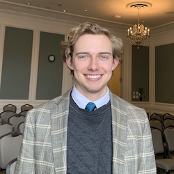

Lorenzo
I am from Las Vegas. I served a mission in Peru in 2014. I got married in 2019. We had our first baby in 2021. Most of my career has been in Customer service / Technical support. Previously, I studied biology. I'm a big nature-lover. Plans change though. So, to pursue a career that fits our lifestyle better I decided to enroll in courses in pathway and switch degrees. Unrelated to the degree, now we live in Serbia and we are loving it. I will be graduating July 2023- with an Applied Technology Degree.